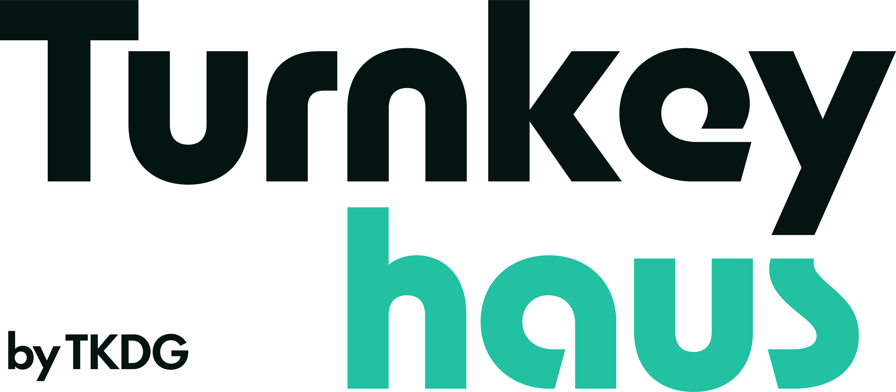
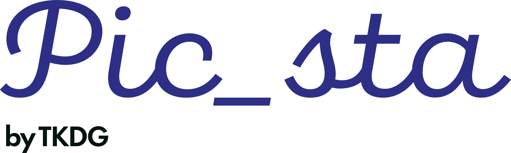

01
TKDG Labs
상위 브랜드 · 전략 본부
브랜드 런칭 방향, 고객 정의, 채널 운영 구조, 비주얼 기준을 설계합니다. 입지·공간·운영 리스크가 필요한 프로젝트는 외부 전문가 네트워크와 연계해 의사결정을 지원합니다.
HQ
전략 문의TKDG LABS CORPORATE LANDING
TKDG Labs는 브랜드 전략, 콘텐츠 채널 운영, 비주얼 프로덕션을 하나의 실행 구조로 연결합니다.
전문직·기업·프랜차이즈가 발견되고 신뢰받는 구조를 만듭니다.
Company
TKDG Labs는 브랜드가 시장에 진입하고, 고객에게 발견되고, 지속적으로 선택받는 구조를 전략-콘텐츠-비주얼로 설계합니다.
병원·로펌·기업·프랜차이즈가 브랜드 런칭을 준비할 때 필요한 포지셔닝, 채널 운영, 촬영·제작 기준을 하나의 실행 체계로 정리합니다.
필요 범위에 따라 턴키하우스 by TKDG와 픽스타 by TKDG를 연결해 콘텐츠 운영과 비주얼 제작까지 이어지는 실행팀을 구성합니다.
Business Scope
브랜드를 새로 만들거나 기존 브랜드의 콘텐츠 실행 체계를 다시 잡을 때, 아래 세 가지 축을 프로젝트 목적에 맞춰 조합합니다.
브랜드명, 포지셔닝, 톤앤매너, 고객 경험, 런칭 방향을 설계합니다.
유튜브, 블로그, SNS 등 브랜드가 발견되고 설득되는 콘텐츠 운영 구조를 만듭니다.
프로필, 공간, 제품, 인터뷰 영상 등 브랜드에 필요한 비주얼 자산을 제작합니다.
Brand Architecture
01
상위 브랜드 · 전략 본부
브랜드 런칭 방향, 고객 정의, 채널 운영 구조, 비주얼 기준을 설계합니다. 입지·공간·운영 리스크가 필요한 프로젝트는 외부 전문가 네트워크와 연계해 의사결정을 지원합니다.
HQ
전략 문의02

유튜브·콘텐츠 채널 월간 운영 유닛
전문직·고관여 브랜드의 채널 기획, 대본, 촬영, 편집, 썸네일, 업로드, 성과 리포트까지 월간 운영합니다. 필요 시 사내 영상 제작 시스템과 콘텐츠 인재 실무평가까지 함께 설계합니다.
Live
브랜드 페이지 이동03

프로필·공간·브랜드 비주얼 제작 유닛
브랜드 프로필, 공간, 콘텐츠용 비주얼 자산을 제작합니다. 현재는 턴키하우스 프로젝트의 촬영·비주얼 제작과 연계해 운영합니다.
Visual
제작 문의Execution Cases
치과·정형외과·법률 분야 등 신뢰 기반 업종의 영상, 블로그, SNS 콘텐츠 운영 경험을 축적했습니다.
브랜드명, 톤앤매너, 채널 운영 기준, 촬영·제작 범위를 함께 정리해 초기 실행 오류를 줄입니다.
촬영 기준, 편집 기준, 콘텐츠 캘린더, 승인 프로세스를 정리해 내부 운영 가능한 구조를 만듭니다.
Why TKDG
브랜드 전략부터 콘텐츠 운영과 비주얼 제작까지 하나의 리드 체계로 관리해 의사결정과 실행 속도를 동시에 확보합니다.
Integrated Execution콘텐츠 마케팅과 비주얼 제작을 동시에 고려해 인지 확장, 상담 전환, 브랜드 신뢰 형성을 함께 설계합니다.
Content × Visual Launch공간, 계약, 세무·노무 등 운영 검토가 필요한 프로젝트는 외부 전문가 네트워크와 연계해 리스크를 줄입니다.
Operational Risk Control프로젝트마다 포지셔닝, 콘텐츠 기준, 제작 프로세스를 문서화해 반복 가능한 실행 구조를 축적합니다.
Scalable Growth Roadmap공인중개사, 가맹거래사, 변호사, 행정사 등 분야별 전문가와 협업해 의사결정 정확도를 높입니다.
External Advisory NetworkPeople
사진 카드를 클릭하면 이미지 위에 학력, 주요 경력, 자격사항이 표시됩니다.
리드 3인이 전략·제작·콘텐츠 운영을 직접 관리하고, 검증된 협력 PD 3명, 디자이너 2명, 기획자 1명과 프로젝트별 실행팀을 구성합니다.
FAQ
브랜드 런칭과 콘텐츠 운영을 검토하는 고객이 실제로 확인해야 할 질문을 기준으로 정리했습니다.
Request Proposal
의뢰 성격과 필요한 지원 범위를 남겨주시면, 브랜드 런칭·콘텐츠 운영·비주얼 제작 중 필요한 실행 범위를 검토해 연락드리겠습니다.
Contact
회사 소개 자료, 사업 제안, 파트너십 문의를 아래 채널로 남겨주세요.